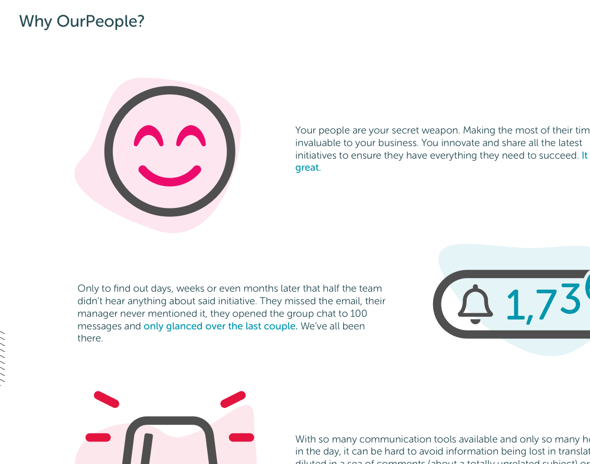

CLIENT
OurPeopleDATE
2020ROLES
Website designInteraction design
COLLABORATORS
CEO Product owner Senior developerThe gist
Our website was in desperate need of a redesign. We needed to include new features and do some branding updates. After spending time finessing wireframes with my colleagues, the impact of the Covid-19 pandemic was felt and we had to quickly adapt to launching a new product, which meant an extra marketing site would be required. I created an extra set of visuals to account for the new product and its features and we were able to launch both sites albeit slightly later than planned.
Skills used
Sketch, Miro Wireframing, After effects, Premiere Pro

A smiley snapshot from the new site.